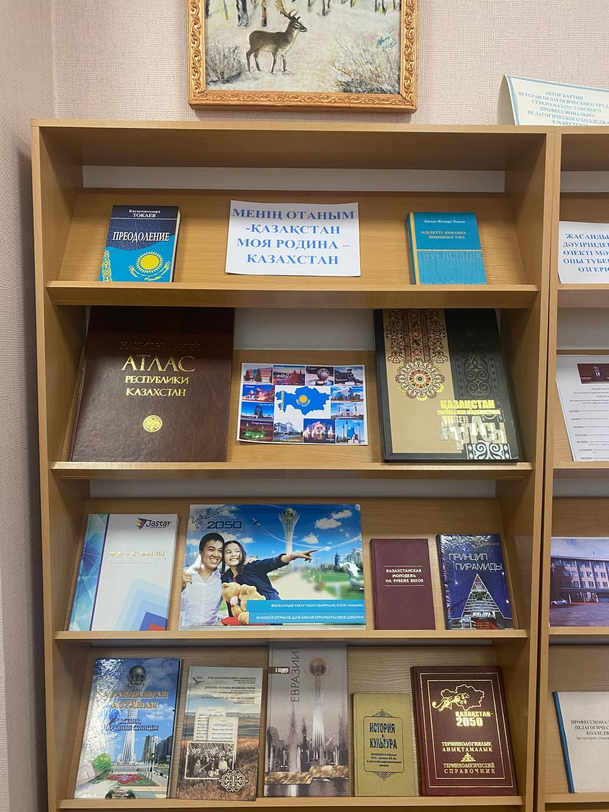
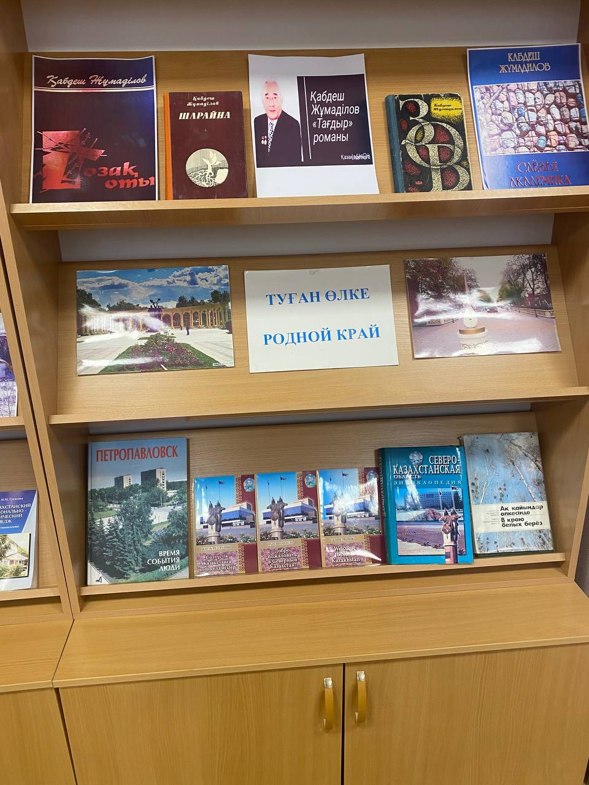
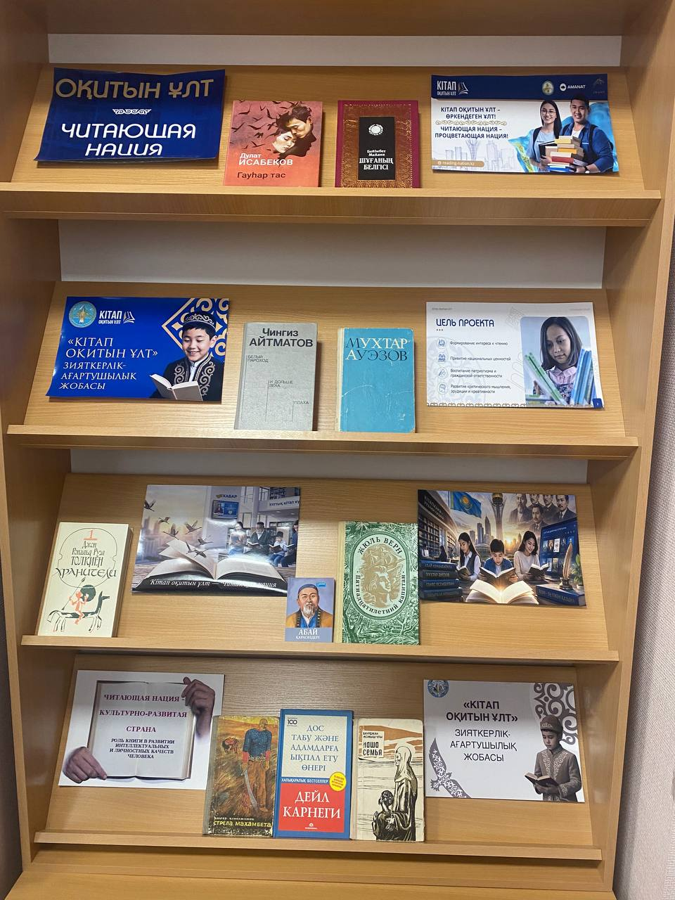
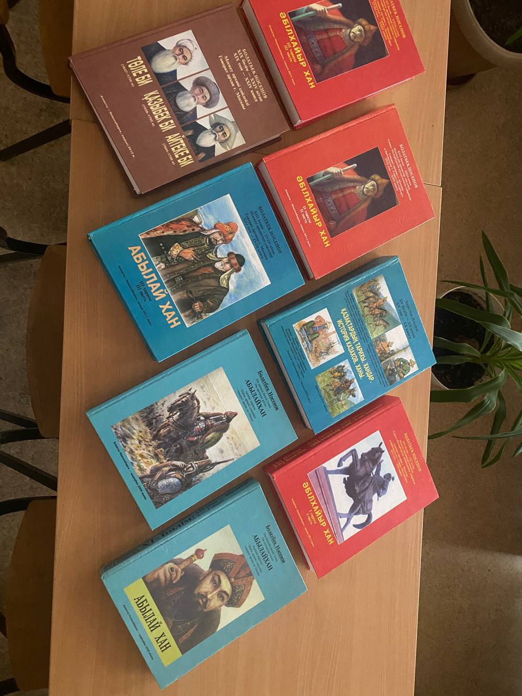
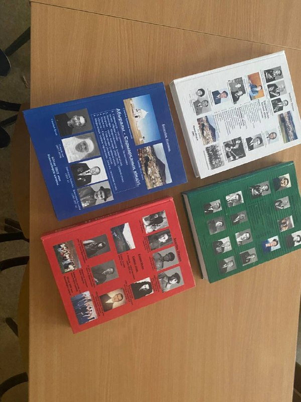

Древность
Великая степь
Территория современного Казахстана была местом развития древних культур, кочевых объединений и торговых путей, связывавших разные части Евразии.
ВИРТУАЛЬНАЯ БИБЛИОТЕЧНАЯ ВЫСТАВКА
Книжное путешествие по истории, культуре и родному краю
25 октября · День Республики Казахстан
Приглашаем вас познакомиться с виртуальной библиотечной выставкой, посвящённой нашей Родине — Республике Казахстан. На страницах выставки представлены история страны, богатство казахской культуры, выдающиеся писатели, природа родного края и литература о Северо-Казахстанской области.
Книги помогают узнавать прошлое, понимать настоящее и сохранять память о людях и событиях, которые сформировали нашу страну.
Главные страницы истории страны — от древних степей до независимого Казахстана.
Территория современного Казахстана была местом развития древних культур, кочевых объединений и торговых путей, связывавших разные части Евразии.
Образование Казахского ханства стало важным этапом в формировании казахской государственности и исторической общности народа.
25 октября 1990 года была принята Декларация о государственном суверенитете Казахской ССР. Эта дата отмечается как День Республики.
16 декабря 1991 года Казахстан провозгласил государственную независимость.

Казахстан — страна с богатой историей, широкими степями и самобытной культурой.

Не найден файл images/moya-rodina.jpg. Проверьте папку images на GitHub.')">Северо-Казахстанская область — край озёр, лесов, степей и богатой истории.

Не найден файл images/rodnoy-kray.jpg. Проверьте папку images на GitHub.')">Изучаем историю родного города и места, которые сохраняют память о прошлом.

Один из известных исторических объектов Петропавловска, связанный с памятью об Абылай хане и историей казахской государственности.

Архитектура города отражает разные этапы его развития и помогает представить, как менялся наш край.

Природа Северного Казахстана — важная часть местного наследия, которую необходимо изучать и беречь.
Писатели и поэты, чьи произведения стали частью культурного наследия Казахстана.

Великий казахский поэт, мыслитель и просветитель. Его стихи и «Слова назидания» поднимают вопросы образования, нравственности и человеческого достоинства.

Классик казахской литературы, автор эпопеи «Путь Абая», рассказывающей о жизни и эпохе великого поэта.

Автор исторической трилогии «Кочевники», посвящённой важным событиям и личностям истории казахского народа.
Природное наследие страны — горы, озёра, степи, каньоны и охраняемые территории.

Известный природный объект Казахстана с необычными скальными формами и выразительными пейзажами.

Охраняемая территория, известная озёрами и богатым миром птиц. Заповедники помогают сохранять редкие виды животных и растений.
Живописный природный район с озёрами, сосновыми лесами и скалами, популярный среди жителей и гостей страны.
Галерея природных красот, культурных символов и архитектуры.


Фотографии загружаются с Wikimedia Commons. Для просмотра требуется подключение к интернету; если отдельное изображение недоступно, можно заменить его ссылку на другой файл.
Дополнительный стенд выставки, посвящённый книгам, истории и культуре родного края.

Не найден файл images/stand-3.jpg. Добавьте фотографию в папку images.')">Подборка направлений для знакомства с историей города, родным краем и природным наследием.

Добавьте images/book-1.jpg')">Издания о развитии города, его архитектуре, известных жителях и исторических событиях.

Добавьте images/book-2.jpg')">Краеведческая литература о природе, населённых пунктах, культуре и истории нашего региона.
Книги о животных, растениях, национальных парках и заповедных территориях Казахстана.
Фотографии первых двух книг — это файлы библиотеки. Помести изображения обложек в папку images под именами book-1.jpg и book-2.jpg.
Посетите библиотеку, познакомьтесь с книгами об истории Казахстана, найдите произведения любимых авторов и откройте новые страницы истории Северо-Казахстанской области.
Читайте, узнавайте, берегите историю своей Родины!